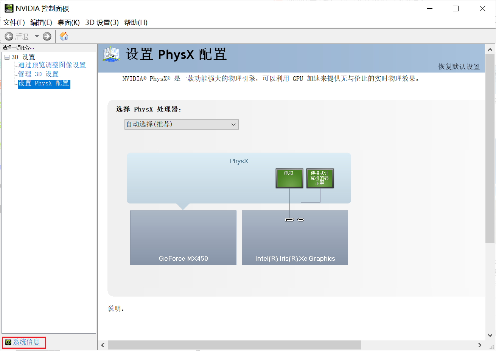
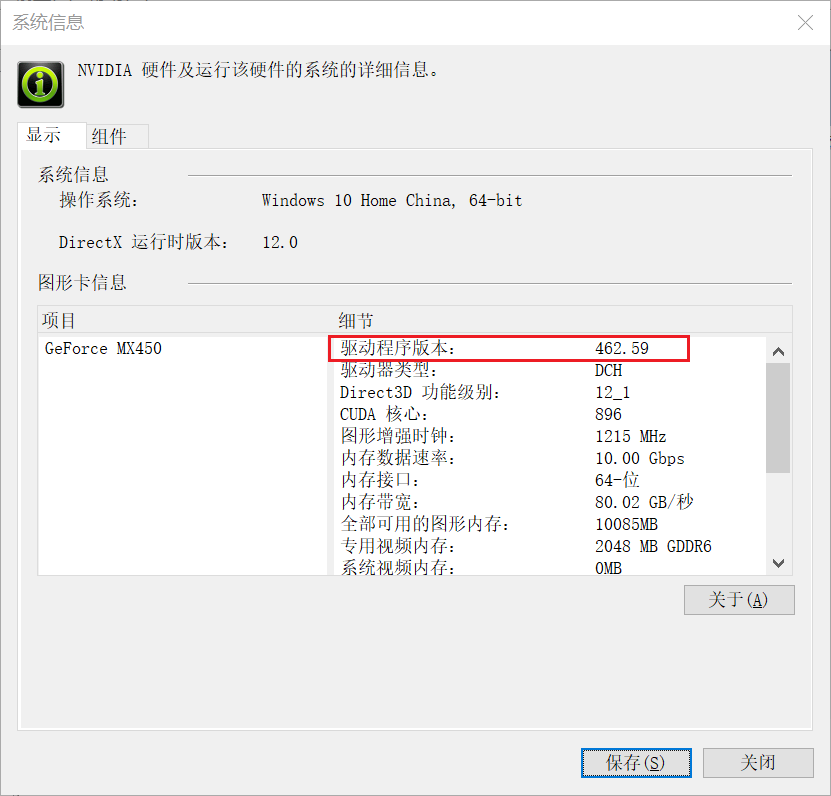
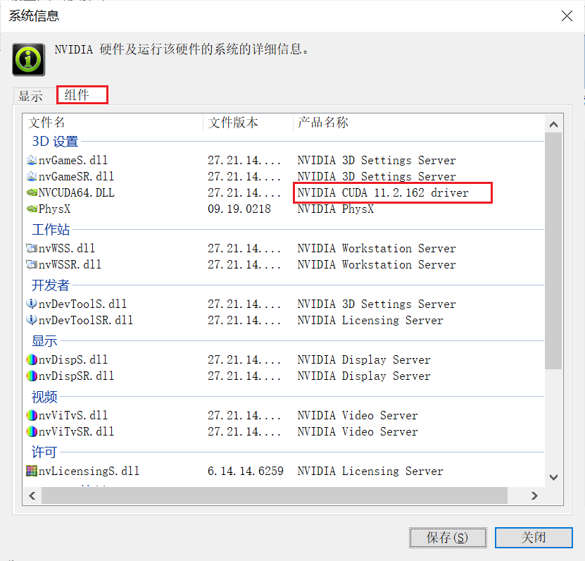
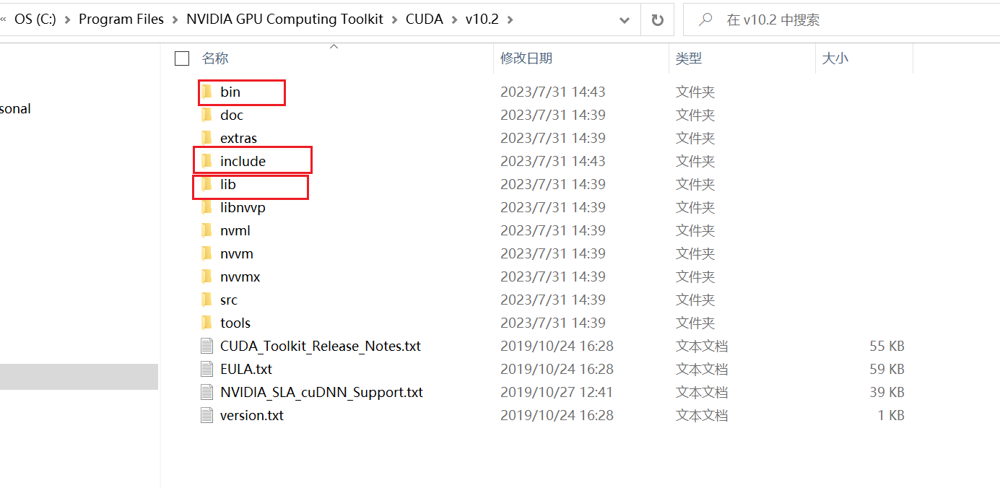
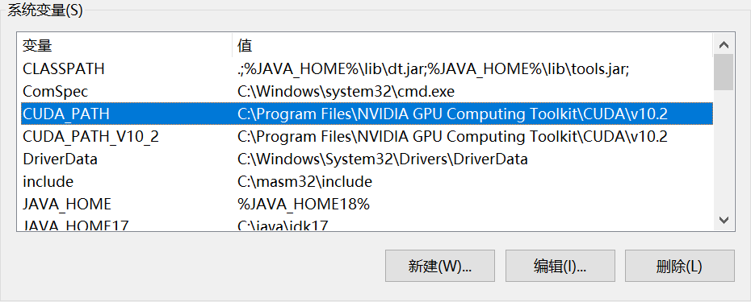
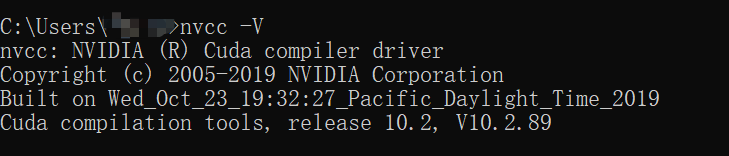
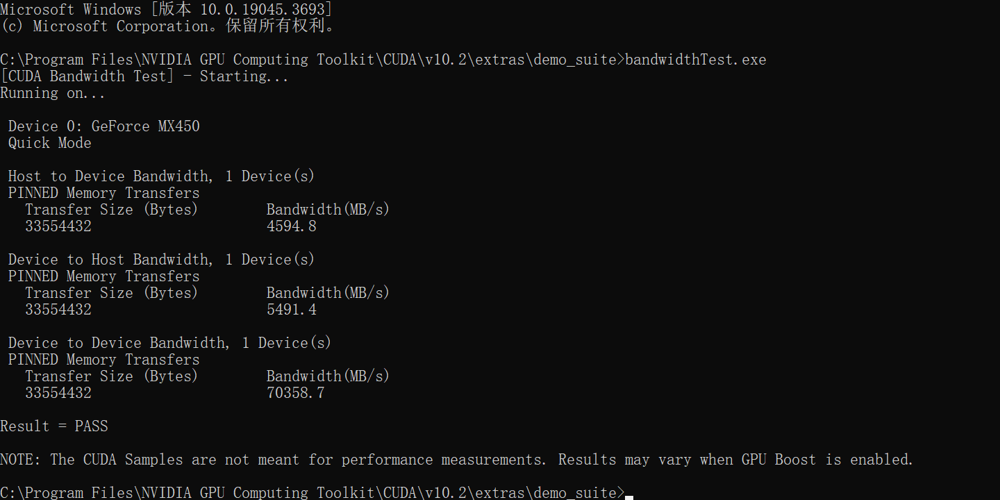
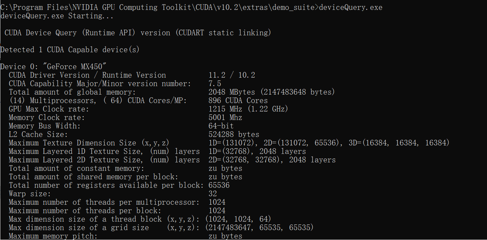
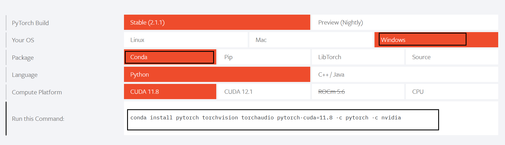

Anaconda
命令
常用命令
1
2
3
4
5
6
7
8
9
10
11
12
| #更新conda
conda update -n base conda
#创建虚拟环境 python3.9
conda create -n python3.9 python=3.9
#显示所有的虚拟环境
conda env list
conda info --envs
#激活虚拟环境
conda activate env_name
#关闭虚拟环境
conda deactivate
|
更新、卸载等
1
2
3
4
5
6
7
8
9
10
| #查看以及安装的文件包
conda list
#查看指定虚拟环境下的安装包
conda list -n env_name
#更新文件包
conda update package_name
#删除文件包
conda uninstall package_name
#删除虚拟环境
conda remove -n env_name --all
|
查看、添加、删除源
1
2
3
4
5
6
7
8
9
10
11
12
13
14
15
16
17
18
19
20
21
22
23
24
| #查看源
conda config --show channels
#添加源
conda config --add channels 源名
channels:
#清华
conda config --add channels https://mirrors.tuna.tsinghua.edu.cn/anaconda/pkgs/main/
conda config --add channels https://mirrors.tuna.tsinghua.edu.cn/anaconda/pkgs/free/
conda config --add channels https://mirrors.tuna.tsinghua.edu.cn/anaconda/cloud/conda-forge/
conda config --add channels https://mirrors.tuna.tsinghua.edu.cn/anaconda/cloud/pytorch/
#上交
conda config --add channels https://mirrors.sjtug.sjtu.edu.cn/anaconda/pkgs/main/
conda config --add channels https://mirrors.sjtug.sjtu.edu.cn/anaconda/pkgs/free/
conda config --add channels https://mirrors.sjtug.sjtu.edu.cn/anaconda/cloud/conda-forge/
#中国科学技术大学
conda config --add channels https://mirrors.ustc.edu.cn/anaconda/pkgs/main/
conda config --add channels https://mirrors.ustc.edu.cn/anaconda/pkgs/free/
conda config --add channels https://mirrors.ustc.edu.cn/anaconda/cloud/conda-forge/
#阿里
conda config --add channels http://mirrors.aliyun.com/pypi/simple/
#中国科技大学
conda config --add channels https://pypi.mirrors.ustc.edu.cn/simple/
|
CUDA
安装
打开NVIDIA 控制面板
点击左下角系统信息

在第一行可以看到驱动程序版本

再点击组件可以看到GPU驱动版本

版本要求1. CUDA 12.3 Update 1 发行说明 — 发行说明 12.3 文档 (nvidia.com)
下载CUDA ToolkitCUDA Toolkit Archive | NVIDIA Developer
- 定义： CUDA（Compute Unified Device Architecture）是由 NVIDIA 提供的一种并行计算平台和应用程序编程接口（API）。CUDA Toolkit 包含了一组用于在 NVIDIA GPU 上进行并行计算的工具和库。
- 用途： CUDA Toolkit 允许开发者使用 GPU 加速执行计算密集型任务，特别是适用于深度学习、科学计算、模拟等领域。它提供了一种在 GPU 上运行通用计算任务的编程模型。
下载cudnncuDNN 存档 |NVIDIA 开发者
- 定义： cuDNN 是 NVIDIA 提供的深度神经网络库，用于在 GPU 上进行深度学习任务。它是为深度神经网络提供高性能、高效率的实现而设计的。
- 用途： cuDNN 通过提供高度优化的原语和功能，加速了深度学习模型的训练和推断过程。它为深度学习框架提供了基本的构建模块，如卷积、池化、归一化等，使这些框架能够更高效地在 NVIDIA GPU 上运行。
CUDA安装完成（建议默认路径），cudnn下载后解压三个文件夹至CUDA的如下安装目录覆盖，即可完成安装

在系统环境变量里查看是否CUDA环境配置成功，没有可以手动配置

然后用Win+R快捷键输入cmd打开终端，输入nvcc -V,如下图所示表示安装cuda成功

打开CUDA安装目录下的extras，然后打开demo_suit，然后在文件位置处输入cmd，能打开对应位置的命令行，在命令行中输入bandwidthTest.exe 和 deviceQuery.exe，出现如下说明cudnn安装成功


Pytorch
安装
打开指定的虚拟环境
进入Pytorch官网PyTorch，找到合适自己电脑的版本

复制这个命令到Anaconda Powershell Prompt（此时已经在指定的虚拟环境），确认下载即可
测试是否安装成功：
依次输入
1
2
3
4
| python
import torch
torch.__version__
torch.cuda.is_available()
|
显示True即成功
SSH
1
2
| #进入power shell
ssh -t username@your_windows_machine powershell
|